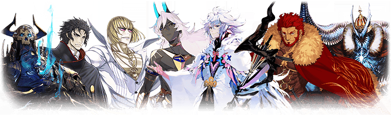

◆「福袋召喚2021(紅白×三騎士・四騎士・EXTRA別)」期間◆
期間:2021年1月1日(五) 23:00～1月10日(日) 11:59
舉辦期間限定「福袋召喚2021(紅白×三騎士・四騎士・EXTRA別)」！

詳情請在聖晶石召喚畫面左下的召喚詳細確認。
確定1位期間限定★5(SSR)從者、確定1張★4(SR)以上、確定1位★3(R)以上的從者！ ※確定★4(SR)以上包含從者和概念禮裝。
◆有關聖晶石的注意◆
※用有償聖晶石15個才能召喚。無法用無償聖晶石召喚。
※聖晶石購入時賦予的「附贈(オマケ)」是做為無償聖晶石而不包含在有償聖晶石的個數，請注意別搞錯。另外，持有聖晶石的細項，可從持有道具一覧確認。
◆有關從者的注意◆
※請注意下述的從者於本召喚為抽出對象外。
・★5(SSR)千子村正
※「★5(SSR)蘆屋道滿」就算靈基再臨過卡面及戰鬥角色等也變化到第2階段為止。
想變化到第3階段以上的話必須通過『靈基解放關卡』。
※持有「★5(SSR)蘆屋道滿」的話，「★5(SSR)蘆屋道滿」的『靈基解放關卡』會登錄到「幕間物語」。
(只登錄到「幕間物語」，沒有文字冒險部份)
※「★5(SSR)蘆屋道滿」的『靈基解放關卡』在「★5(SSR)蘆屋道滿」最終再臨後開放。
※請注意「★5(SSR)蘆屋道滿」的『靈基解放關卡』不計算在Extra(エクストラ)任務的「通過幕間物語〇個」。
※會從「福袋召喚2021(紅白×三騎士・四騎士・EXTRA別)」抽出的★5(SSR)從者只限2020年12月為止登場的期間限定從者對象，不會抽出會從故事召喚被抽出的★5(SSR)從者。
※召喚對象對應從9種選擇召喚的確定1位期間限定★5(SSR)從者以外，也包含一部份的★4(SR)、★3(R)從者及概念禮裝。
※關於★4(SR)及★3(R)從者也會從「紅」的召喚抽出對應職階的女性從者、從「白」的召喚抽出對應職階的男性從者＋其他性別的從者。
※選擇「福袋召喚2021(紅EXTRA【壹】)」及「福袋召喚2021(紅EXTRA【貳】)」的情況，會被抽出的★3(R)的從者職階為Archer、Lancer、Rider、Caster、Assassin、Berserker對象。
※透過章節進行追加的★4(SR)以下從者，就算通過各章前也能入手。
※請注意★4(SR)以下的期間限定從者為被抽出對象外。
※關於隱藏真名尚未判明的從者，透過主線關卡的進行會讓從者及一部份寶具的名稱變化。
◆有關從者真名的注意◆
在2018年12月31日(二) 23:00以後新配信的主線故事及期間限定活動、一部份關卡、宣傳活動及召喚中，會顯示隱藏真名的對象從者真名。
※2018年12月31日(一) 22:59前已經配信的主線故事、復刻活動、一部份關卡中不在此限。
◆有關概念禮裝的注意◆
※下述的期間限定概念禮裝也會從本召喚登場。
・★5(SSR)春の琴線
・★4(SR)笑うコタツに福来る
・★3(R)勇敢なるもの
※下述的概念禮裝，Pick Up期間中也能靠友情點數召喚獲得。
・★3(R)勇敢なるもの
※在自動變還設定登錄★3(R)概念禮裝的情況，下述的概念禮裝會變成自動變還的對象。
・★3(R)勇敢なるもの

| 職階 | 稀有度 | 從者名 |
|---|---|---|
| Saber | ★★★★★ | 伊吹童子 |
| ★★★★★ | 沖田總司 | |
| ★★★★★ | 兩儀式 | |
| Archer | ★★★★★ | 阿爾托莉亞・潘德拉剛 |
| ★★★★★ | 伊絲塔 | |
| Lancer | ★★★★★ | 艾蕾修卡 |
| ★★★★★ | 布倫希爾德 |
| 職階 | 稀有度 | 從者名 |
|---|---|---|
| Saber | ★★★★★ | 尼祿・克勞狄烏斯〔Bride〕 |
| ★★★★★ | 紅閻魔 | |
| ★★★★★ | 宮本武藏 | |
| Archer | ★★★★★ | 貞德 |
| ★★★★★ | 清少納言 | |
| Lancer | ★★★★★ | 斯卡哈 |
| ★★★★★ | 玉藻前 |
| 職階 | 稀有度 | 從者名 |
|---|---|---|
| Rider | ★★★★★ | 李奧納多・達文西 |
| Caster | ★★★★★ | 阿爾托莉亞・Caster |
| ★★★★★ | 伊莉雅絲菲爾・馮・愛因茲貝倫 | |
| ★★★★★ | 紫式部 | |
| Assassin | ★★★★★ | 伽摩 |
| ★★★★★ | 賽米拉米斯 | |
| ★★★★★ | 謎之女主角X | |
| Berserker | ★★★★★ | 宮本武藏 |
| 職階 | 稀有度 | 從者名 |
|---|---|---|
| Rider | ★★★★★ | 阿爾托莉亞・潘德拉剛〔Alter〕 |
| ★★★★★ | 司馬懿〔萊涅絲〕 | |
| Caster | ★★★★★ | 斯卡哈＝斯卡蒂 |
| ★★★★★ | 尼祿・克勞狄烏斯 | |
| ★★★★★ | 李奧納多・達文西 | |
| Assassin | ★★★★★ | 克麗奧佩脫拉 |
| ★★★★★ | 酒吞童子 | |
| Berserker | ★★★★★ | 謎之女主角X〔Alter〕 |
| ★★★★★ | 源賴光 |

| 職階 | 稀有度 | 從者名 |
|---|---|---|
| Ruler | ★★★★★ | 卑彌呼 |
| Avenger | ★★★★★ | 太空・伊絲塔 |
| Alterego | ★★★★★ | 帝王花 |
| ★★★★★ | Meltryllis | |
| MoonCancer | ★★★★★ | BB |
| Foreigner | ★★★★★ | 阿比蓋爾・威廉斯 |
| ★★★★★ | 阿比蓋爾・威廉斯〔夏〕 | |
| ★★★★★ | 楊貴妃 |

| 職階 | 稀有度 | 從者名 |
|---|---|---|
| Ruler | ★★★★★ | 阿爾托莉亞・潘德拉剛 |
| Avenger | ★★★★★ | 貞德〔Alter〕 |
| ★★★★★ | 魔王信長(織田信長) | |
| Alterego | ★★★★★ | 沖田總司〔Alter〕 |
| ★★★★★ | 殺生院祈荒 | |
| MoonCancer | ★★★★★ | 殺生院祈荒 |
| Foreigner | ★★★★★ | 梵谷 |
| ★★★★★ | 葛飾北齋 |
※「★5(SSR)魔王信長(織田信長)」是「★5(SSR)織田信長」靈基再臨到第3階段的話名稱會變成「★5(SSR)魔王信長」。
| 職階 | 稀有度 | 從者名 |
|---|---|---|
| Saber | ★★★★★ | 亞瑟・潘德拉剛〔Prototype〕 |
| ★★★★★ | 阿斯托爾福 | |
| ★★★★★ | 西格魯德 | |
| Archer | ★★★★★ | 吉爾伽美什 |
| ★★★★★ | 詹姆斯・莫里亞蒂(新宿的Archer) | |
| ★★★★★ | 超人俄里翁 | |
| Lancer | ★★★★★ | 羅慕路斯＝奎里努斯 |
※請注意「★5(SSR)千子村正」為抽出對象外。

| 職階 | 稀有度 | 從者名 |
|---|---|---|
| Rider | ★★★★★ | 伊凡雷帝 |
| ★★★★★ | 伊斯坎達爾 | |
| Caster | ★★★★★ | 梅林 |
| Assassin | ★★★★★ | “山之翁” |
| Berserker | ★★★★★ | 阿周那〔Alter〕 |
| ★★★★★ | 坂田金時 | |
| ★★★★★ | 土方歲三 |
| 職階 | 稀有度 | 從者名 |
|---|---|---|
| Ruler | ★★★★★ | 天草四郎 |
| ★★★★★ | 始皇帝 | |
| ★★★★★ | 夏洛克・福爾摩斯 | |
| Avenger | ★★★★★ | 巖窟王 |
| Alterego | ★★★★★ | 蘆屋道滿 |
| Foreigner | ★★★★★ | Voyager |
※「★5(SSR)蘆屋道滿」就算靈基再臨過卡面及戰鬥角色等也變化到第2階段為止。
想變化到第3階段以上的話必須通過『靈基解放關卡』。
※持有「★5(SSR)蘆屋道滿」的話，「★5(SSR)蘆屋道滿」的『靈基解放關卡』會登錄到「幕間物語」。
(只登錄到「幕間物語」，沒有文字冒險部份)
※「★5(SSR)蘆屋道滿」的『靈基解放關卡』在「★5(SSR)蘆屋道滿」最終再臨後開放。
※請注意「★5(SSR)蘆屋道滿」的『靈基解放關卡』不計算在Extra(エクストラ)任務的「通過幕間物語〇個」。
其他還有，
・2021年新年宣傳活動
・New Year 2021Pick Up召喚(每日交替)
以期間限定舉辦中！
關於詳情，請自下述橫幅確認。
■「2021年新年宣傳活動」詳細情報

■「New Year 2021Pick Up召喚(每日交替)」詳細情報